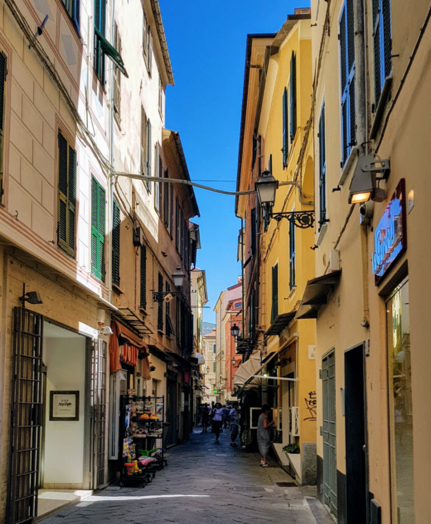

Das Herzstück von Alassio - abgesehen vom Strand - ist die Fussgängerzone, welche nach dem Strandtag zum Flanieren einlädt. In den 1000 Meter Gässchen findet man in den unzähligen Läden vom ersten bis zum letzten Tag immer mal wieder etwas Neues. Die beste Zeit zum Entdecken ist jeweils abends vor dem Essen, wobei man es gleich mit der Suche nach einer Gelegenheit fürs Aperitif verknüpfen kann.Alassio ist zwar eigentlich gross, man kann sich aber ohne schlechtes Gewissen auf eine schmalen Streifen entlang des Strandes beschränken, welchen man nur bei schlechtem Wetter zu verlassen braucht (wenn überhaupt):
Das Ende Gasse ist erreicht, wenn sich der Häuserwald zur Piazza Partigiani lichtet.
